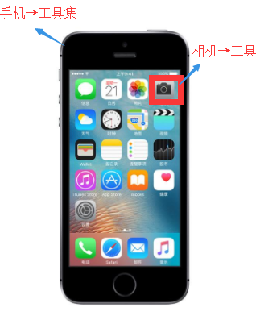
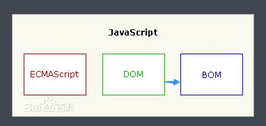
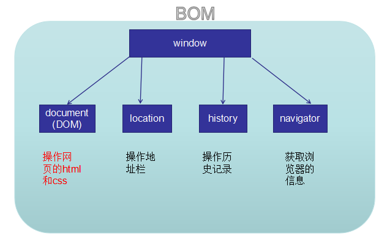
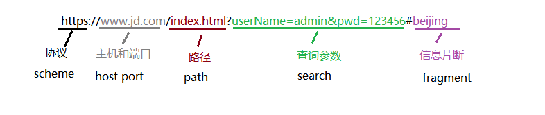
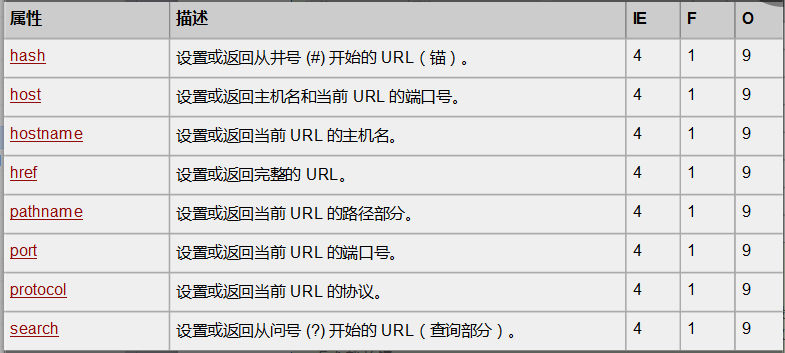
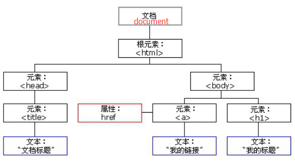

官方解释
API（Application Programming Interface,应用程序编程接口）是一些预先定义的函数，目的是提供应用程序与开发人员基于某软件或硬件得以访问一组例程的能力，而又无需访问源码，或理解内部工作机制的细节。
通俗理解
API简单理解就是一个封装好的工具集。需要完成什么功能时，只需要调用工具集中的某个工具就可以完成。不需要你去理解或掌握工具内部的实现。
比如：手机可以理解为是一个工具集（API）,你想要照相功能时，只需要点一下手机上的 相机图标 就能够完成照相功能。 那么相机图标 就是工具集中的一种工具。 你不需要了解相机是如何调用摄像头，如何感光成像，如何聚焦等内部原理。仅仅只需要点一下使用就行。 
BOM
BOM（Browser Object Model）浏览器对象模型。提供了一组工具，可以帮我我们操作浏览器。比如：操作地址栏、操作历史记录等等。
DOM
DOM (Document Object Model) 文档对象模型，提供了一组工具，可以帮助我们操作网页中的结构和样式。
ECMAScript、BOM、DOM的区别
- ECMAScript 核心语法 独立于BOM和DOM
- BOM 浏览器对象模型
- DOM 文档对象模型
- 注意：DOM其实属于BOM的一部分，因为DOM要学习的比例多，所以把DOM单独抽取出来学习。 

window是顶级对象或全局对象
window对象被称为顶级对象（全局对象），在程序中所有的全局变量或者全局函数都会被当作window对象中的属性或方法。
书写时,window对象可以省略
代码
x1var userName = '张三'; //全局变量2function test(){ //全局函数3alert('hello');4}56console.log(window.userName); //'张三';7console.log(userName); //'张三'; window对象可以省略89window.test(); //'hello';10test(); //'hello'; window对象可以省略
window对象中的对话框方法
alert();
confirm();
prompt();
代码
xxxxxxxxxx31alert(1); //window.alert(1);2confirm('你确定要删除吗？'); //window.confirm('你确定要删除吗？');3prompt('请输入你的年龄'); //window.prompt('请输入你的年龄');
window对象中的定时器方法
setTimeout(callback,time);
xxxxxxxxxx391<html>2<head>3<meta charset='utf-8'>4<script>5/*6创建一个定时器7语法：8setTimeout(callback,time);910作用：超时调用，仅执行一次。1112参数：13callback,回调函数。超时后会执行回调函数中的代码14time,时间(单位为毫秒)。多少时间后回调函数中的代码会执行。1516返回值：返回一个数字，标识当前的定时器。17*/18var timerId = setTimeout(function(){ //产生一个setTimeout定时器19console.log('执行');20},3000); //回调函数中的程序在3秒过后会执行21/*23停止setTimeout产生的定时器：24语法：25clearTimeout(num)2627作用：停止setTimeout产生的定时器2829参数：30num,setTimeout产生的定时器时返回的数字标识31*/3233</script>34</head>35<body>37<button onclick="clearTimeout(timerId)">停止定时器</button>38</body>39</html>setInterval(callback,time);
xxxxxxxxxx411<html>2<head>3<meta charset='utf-8'>4<script>5/*6创建一个定时器7语法：8setInterval(callback,time);910作用：超时调用，重复执行（每间隔一段时间执行一次）。1112参数：13callback,回调函数。超时后会执行回调函数中的代码14time,时间(单位为毫秒)。多少时间后回调函数中的代码会执行。1516返回值：返回一个数字，标识当前的定时器。17*/18var count = 0;19var timerId = setInterval(function(){ //产生一个setInterval定时器20count++;21console.log('执行' + count);22},1000); //回调函数中的程序每间隔1秒过后会执行23/*25停止setInterval产生的定时器：26语法：27clearInterval(num)2829作用：停止setInterval产生的定时器3031参数：32num,setInterval产生的定时器时返回的数字标识33*/3435</script>36</head>37<body>39<button onclick="clearInterval(timerId)">停止定时器</button>40</body>41</html>
location对象介绍
location对象可以用来操作地址栏
URL介绍 【了解】
URL统一资源定位符 (Uniform Resource Locator, URL)
URL的组成
xxxxxxxxxx131scheme://host:port/path?query#fragment2scheme:通信协议3常用的http,https,ftp,maito等4host:主机5服务器(计算机)域名系统 (DNS) 主机名或 IP 地址。6port:端口号7整数，可选，省略时使用方案的默认端口，如http的默认端口为80。8path:路径9由零或多个'/'符号隔开的字符串，一般用来表示主机上的一个目录或文件地址。10query:查询11可选，用于给动态网页传递参数，可有多个参数，用'&'符号隔开，每个参数的名和值用'='符号隔开。例如：name=zs12fragment:信息片断13字符串，锚点.
location对象中的属性

xxxxxxxxxx91//地址：https://www.jd.com/index.html?userName=admin&pwd=123456#beijing2console.log(location.hash); //#beijing3console.log(location.host); //www.jd.com4console.log(location.hostname); //www.jd.com5console.log(location.href); //https://www.jd.com/index.html?userName=admin&pwd=123456#beijing6console.log(location.hostname); // /index.html7console.log(location.port); // '' 默认是808console.log(location.protocol); // https9console.log(location.search); //?userName=admin&pwd=123456
location对象中的方法
location.assign('url');
xxxxxxxxxx21<!-- 跳转到新的页面，并会把之前的页面保存在历史记录中-->2<button onclick="location.assign('https://www.jd.com')">跳转到京东</button>location.replace('url');
xxxxxxxxxx21<!--跳转到新的页面，但不会把之前的页面保存在历史记录中-->2<button onclick="location.replace('https://www.jd.com')">跳转到京东</button>location.reload();
xxxxxxxxxx21<!--刷新当前页面-->2<button onclick="location.reload()">刷新</button>
history对象介绍
用来操作历史记录
history对象中常用的方法
history.back();
xxxxxxxxxx21<!--加载上一个历史记录-->2<button onclick="history.back()">上一个页面</button>history.forward();
xxxxxxxxxx21<!--加载下一个历史记录-->2<button onclick="history.forward()">下一个页面</button>history.go(num);
xxxxxxxxxx41<!--加载上一个历史记录-->2<button onclick="history.go(-1)">上一个页面</button>3<!--加载下一个历史记录-->4<button onclick="history.go(1)">下一个页面</button>
navigator对象介绍
用来获取当前浏览器的信息（所在的系统、浏览器的版本）
navigator对象中常见的属性
navigator.userAgent
xxxxxxxxxx11通过userAgent可以判断用户浏览器的类型navigator.platform
xxxxxxxxxx11通过platform可以判断浏览器所在的系统平台类型.
DOM 文档对象模型
DOM 文档对象模型
xxxxxxxxxx11DOM文档对象模型，又称文档树模型。浏览器在加载页面时，会把html文档解析成一系列的节点对象。再由这些节点对象组成树状结构。 这些节点对象对外都提供了属性和方法。我们可以通过调用节点对象的属性和方法来操作网页。树状图
xxxxxxxxxx1012<html>3<head>4<title>文档标题</title>5</head>6<body>7<a href=”#”>我的链接</a>8<h1>我的标题</h1>9</body>10</html>
节点对象的类型
xxxxxxxxxx81节点对象：2DOM的最小组成单位叫做节点（对象），一个文档的树形结构（DOM树），就是由各种不同类型的节点组成。34- 文档：一个网页可以称为文档5- 节点：网页中的所有内容都是节点（标签、属性、文本、注释等）6- 元素：网页中的标签7- 属性：标签的属性8
节点类型 含义 名称 Document 9 整个文档（document） 文档节点 Element 1 HTML元素（比如、等） 元素节点 Attribute 2 HTML元素的属性（比如class=”right”） 属性节点 Text 3 HTML文档中出现的文本 文本节点
为什么要获取节点对象
我们将来要操作网页，无非就是操作网页中的标签的内容和样式，若要操作某一个标签，那么第一步就是先通过js获取到指定的节点对象。
注意：浏览器在加载网页时，就已经创建好了每一个元素所对应的节点对象。我们现在不需要创建，只要获取就可以。
获取方式
document.getElementById('标签的id值'); 【推荐使用】
xxxxxxxxxx61//根据标签的id值，获取一个节点对象。 返回单个节点对象2var mainNode = document.getElementById('main');3console.log(mainNode); //找到返回一个节点对象，找不到返回null45//注意：标签的id值，一般都是唯一的。若有重复的id值，则仅仅获取第一个。6//id值的命名规范：由数字、字母、_、$组合，不以数字开头。document.getElementsByTagName('标签名'); 【推荐使用】
xxxxxxxxxx31//根据标签名获取一组节点对象。返回一个伪数组2var liNodes = document.getElementsByTagName('li');3console.log(liNodes); //找到返回一个伪数组，伪数组中存放了多个节点对象。找不到返回空伪数组document.getElementsByClassName('标签的类名');
xxxxxxxxxx51//根据标签的类名获取一组节点对象。返回一个伪数组2var boxNodes = document.getElementsByTagName('box');3console.log(liNodes); //找到返回一个伪数组，伪数组中存放了多个节点对象。找不到返回空伪数组45//注意：该方式有兼容性问题。在IE低版本（IE8及以下有兼容性问题）会报错document.getElementsByName('标签的name值');
xxxxxxxxxx51//根据标签的name值获取一组节点对象。返回一个伪数组2var zzNodes = document.getElementsByName('zz');3console.log(zzNodes); //找到返回一个伪数组，伪数组中存放了多个节点对象。找不到返回空伪数组45//注意：该方式有兼容性问题。在IE低版本（IE10以下有兼容性问题）document.querySelector('选择器'); 【不考虑IE低版本，推荐使用】
xxxxxxxxxx51//根据选择器获取单个节点对象。返回一个节点对象2var zzNodes = document.querySelector('ul li.active');3console.log(zzNodes); //找到返回一个节点对象，找不到返回null45//注意：该方式有兼容性问题。在IE低版本（IE8以下有兼容性问题）document.querySelectorAll('选择器'); 【不考虑IE低版本，推荐使用】
xxxxxxxxxx51//根据标签的name值获取一组节点对象。返回一个伪数组2var zzNodes = document.querySelectorAll('ul li.active');3console.log(zzNodes); //找到返回一个伪数组，伪数组中存放了多个节点对象。找不到返回空伪数组45//注意：该方式有兼容性问题。在IE低版本（IE8以下有兼容性问题）
非表单属性（可设置、可获取） 设置方式：节点对象.属性名 = 值; 获取方式：节点对象.属性名;
节点对象.id
节点对象.title
节点对象.className 【重点】
xxxxxxxxxx41//获取标签的class属性的值2console.log(节点对象.className);3//设置标签的class属性的值4节点对象.className = '类名';节点对象.href
xxxxxxxxxx11//针对a标签用的多节点对象.src
xxxxxxxxxx11// 针对图片用的多节点对象.innerHTML 【重点】
xxxxxxxxxx41//获取节点对象中的内容（包含文本和被嵌套的标签）2console.log(节点对象.innerHTML);3//设置节点对象中的内容（可添加标签和文本，并且标签会被解析显示）4节点对象.innerHTML = '<h1>标题</h1>';节点对象.innerText
xxxxxxxxxx61//获取节点对象中的内容（仅仅是文本内容）2console.log(节点对象.innerText);3//设置节点对象中内容（可添加标签和文本，但标签不会被解析,会当做普通的文本）4节点对象.innerText = '<h1>标题</h1>';56//注意 innerText 在火狐低版本有兼容性问题。火狐低版本中使用 textContent 代替
表单属性（可设置、可获取） 设置方式：节点对象.属性名 = 值; 获取方式：节点对象.属性名;
- 节点对象.value;【所有表单标签都可以用】
- 节点对象.checked;【针对多选框和单选框用的多】
- 节点对象.readOnly;【针对文本框或文本域】
- 节点对象.disabled【针对按钮用的多】
我们和网页之间的交互，可以理解为何网页之间的一些行为。常见行为有鼠标点击、鼠标的移动、鼠标的移入和移出、键盘控制等等。这些行为，在我们DOM中被称之为事件。
总而言之，事件就是被JavaScipt侦测到的行为。 作用：就是实现网页交互。
事件三要素
- 事件目标（事件源）：触发事件的元素
- 事件类型：交互方式（鼠标点击、鼠标移入、鼠标离开等）
- 事件处理程序：事件触发后要执行的程序，用函数表示
绑定（注册）方式
语法：
xxxxxxxxxx11事件目标.事件类型 = 事件处理程序;代码：
xxxxxxxxxx101<input type="button" vlaue="按钮" id="btn">2<script>3//需求：点击按钮，弹出'hello'4//① 获取事件目标5var btnNode = document.getElementById('btn');6//② 给事件目标绑定点击事件7btnNode.onclick = function(){8alert('hello');9}10</script>
AخA1① onclick 2 鼠标点击某个节点对象时3② onmouseenter4 鼠标移入到某个节点对象时5③ onmouseleave6 鼠标离开某个节点对象时7④ onmousemove8 鼠标在某个节点对象上移动时